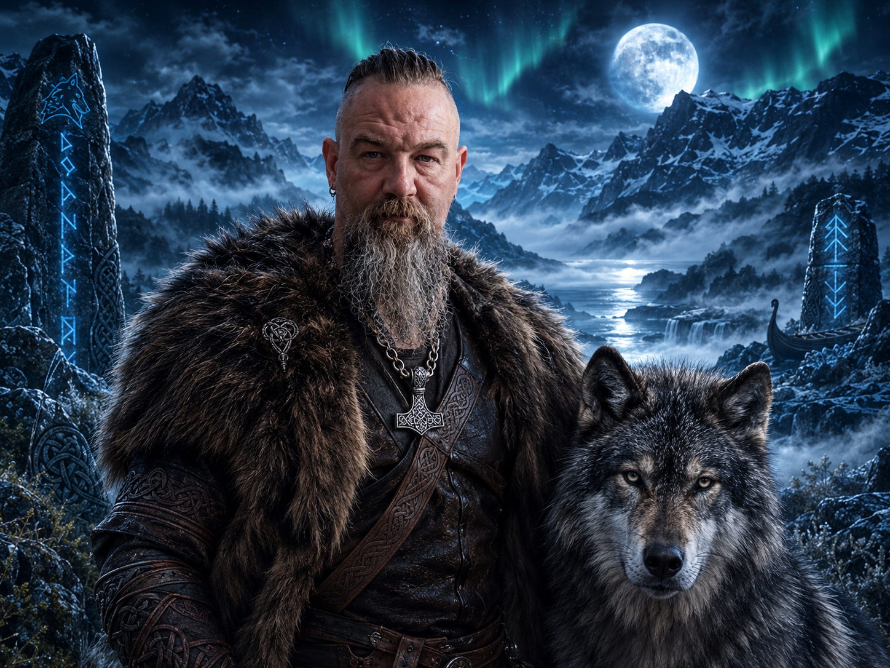

DER WOLFSKLANG
Musik, die aus mir kommt – eigene Texte, Gedanken und Geschichten, musikalisch zum Leben erweckt.
ᚠ ᚱ ᚨ ᛉ ᛟ
Über mich – Der Mensch hinter dem Wolf


ᚠ ᚢ ᚦ ᚨ ᚱ ᚲ ᚷ ᚹ ᚺ ᚾ
Nicht perfekt. Nicht angepasst. Einfach ich!
Hinter dem Namen steckt Jens – ein Mensch mit Ecken und Kanten, Herz, Humor, eigenen Gedanken und einer eigenen Sicht auf die Dinge. Ich verstelle mich nicht, um anderen zu gefallen. Ich habe meine Meinung, meine Überzeugungen und meinen eigenen Weg.
Musik, die aus mir kommt
Ich schreibe meine Songtexte selbst – aus Ideen, Gedanken, Beobachtungen und Geschichten, die das Leben schreibt. Die musikalische Umsetzung und Produktion entstehen mit Unterstützung von KI. Die Worte und der kreative Kern stammen von mir. Ich möchte Texte schaffen, die ausdrücken, berühren und zum Nachdenken anregen.
Und wer ist Jens?
Beruflich arbeite ich als Altenpflegefachkraft. Menschlichkeit, Geduld, Respekt und Humor sind dabei wichtig. Mein kreativer Weg und meine Arbeit in der Pflege sind zwei Seiten meines Lebens.
Mein Motto
Ich muss nicht jedem gefallen und nicht in jede Schublade passen. Lieber echt als perfekt. Lieber eigenständig als angepasst.
Willkommen in der Welt von einsamer_Wolf_JP! Schön, dass du vorbeischaust. Hör rein, schau dich um und lerne meine musikalische Welt kennen.
ᛉ ᛊ ᛏ ᛒ ᛖ ᛗ
Neues aus dem Wolfsrevier
Hier erscheinen künftig neue Songs, Veröffentlichungen und Ankündigungen.
ᚠ ✦ ᚱ ✦ ᛟ
Der nächste Ruf kommt bald …
Die Musik des Wolfs

I Nátá Linté

Wege der Ahnen

Die Seele des Wolfes
Wolfsrevier-Shop
Bald im Wolfsrevier
T-Shirts, Hoodies, Tassen und mehr – sobald der Shop eröffnet ist.